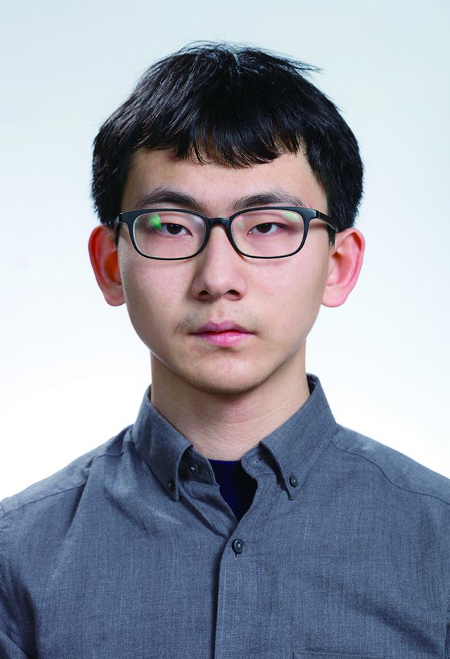
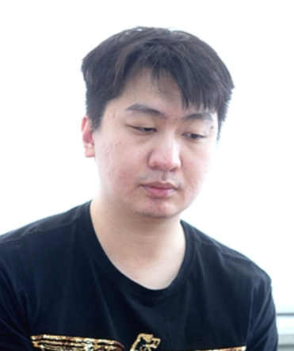
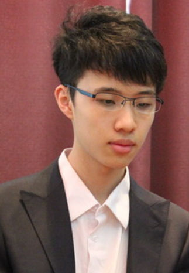
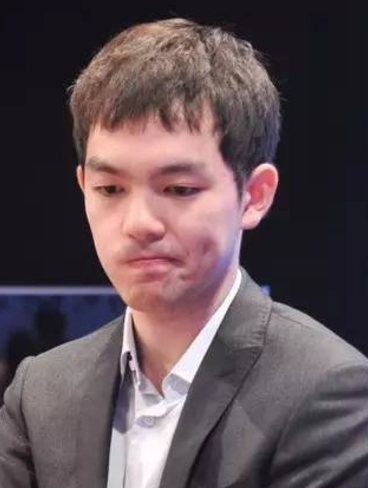
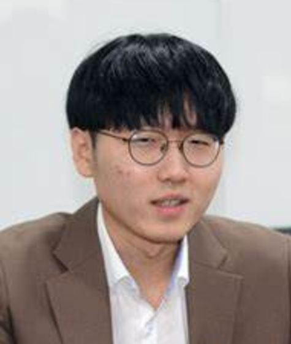
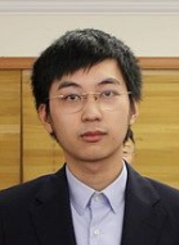

赛事 |
| 国内重要围棋赛事： |
倡棋杯：由中国围棋协会、上海市应昌期围棋教育基金会联合主办，是国内职业围棋的一项重要赛事，采用中国围棋规则，黑方贴 3 又 3/4 子，比赛分为预选赛、本赛和决赛三个阶段，本赛采用单败淘汰制，决赛为三番棋。 烂柯杯：由中国围棋协会、浙江省体育局、衢州市人民政府主办，比赛采用单败淘汰制，冠军奖金为 180 万元人民币，亚军为 60 万元人民币，是国内奖金较高的围棋赛事之一。 |
| 世界职业围棋大赛： |
应氏杯：由应昌期先生创意并由应氏集团赞助举办，1988 年举行首届比赛，每四年举行一届，被誉为围棋界的奥林匹克赛。冠军奖金 40 万美元，亚军奖金 10 万美元，是目前为止奖金额最高的围棋赛事。比赛采用黑贴 8 点的应氏规则，赛制首先为单败淘汰，至半决赛为三番棋，决赛则为五番棋。 富士通杯：由日本《读卖新闻》、日本棋院和关西棋院共同主办，日本富士通公司赞助，是首个世界围棋大赛，于 1988 年诞生，每年举办一次。比赛采用单败淘汰制，直至决出最后的冠军，冠军奖金原为 2000 万日元，从 2003 年起，减为 1500 万日元。不过该赛事已于近年停办。 东洋证券杯：由韩国棋院主办、东洋证券公司赞助，原本是韩国的一项国内棋战，从第三届开始改为国际棋战，成为继富士通杯、应氏杯后的第三个世界慢棋个人围棋大赛，诞生于 1990 年，终止于 1998 年 5 月 13 日。比赛采用韩国围棋规则，黑方出 5 目半，每方用时 3 小时 5 分钟读秒延时制，赛制是 24 人单败淘汰制，决赛为五局三胜制。 LG 杯：创立于 1996 年，由韩国《朝鲜日报》社主办，韩国 LG 公司赞助，冠军奖金为 2 亿 5 千万韩元，赛制为单败淘汰赛，直至产生最后的决赛棋手，决赛采用 5 番棋。从第 10 届比赛开始，仿三星杯改为公开赛，32 名棋手参加，其中 16 名是种子棋手，直接进入本赛，另外 16 名棋手则要经过预选赛才能进入本赛。 三星杯：创办于 1996 年，由韩国中央日报社和 KBS 社共同主办，韩国三星火灾海上保险株式会社提供赞助，冠军奖金为 2 亿韩元，亚军奖金为 5000 万韩元。世界各地选手通过预选赛获得 16 名的本赛权，另外 16 名则是免选的种子棋手，直接进入本赛，决赛为三番棋。 |
著名棋手 |
| 柯洁：1997 年生，中国职业围棋九段棋手，近年来中国围棋的代表性人物之一。他的棋风激进，进攻性强，在世界围棋大赛中多次夺冠，展现出了强大的实力和潜力，对推动中国围棋的发展和普及起到了积极作用 。 | |
|  | 丁浩：中国职业围棋九段棋手；2017 年围甲崭露头角，胜多位世界冠军。；2019 年获 CCTV 电视快棋赛冠军等佳绩。；2021 年首夺国手赛冠军，成首位 “大棋士”，且快速升九段；2023 年获第 27 届 LG 杯冠军，成为中国首位 “00 后” 围棋世界冠军。在国内多项赛事中也有出色表现，展现强大实力与潜力。 |
|  | 党毅飞:中国职业围棋九段棋手。2012 年：获第四届 BC 信用卡杯世界围棋公开赛亚军；2016 年：进入第 21 届 LG 杯决赛，直升九段；2017 年：夺得第 21 届 LG 杯世界围棋棋王战冠军；；2019 年：获得第 20 届农心杯三国围棋擂台赛冠军；2024 年：获首届 “四川能投杯” 中国围棋世界冠军邀请赛亚军 ，在 2024 三星杯世界围棋大师赛决赛中，执黑中盘战胜丁浩，夺得冠军。 |
|  | 连笑: 中国职业围棋九段棋手。2010 年：获理光杯新秀赛冠军；2013 年：获阿含桐山杯中国公开赛冠军、阿含桐山杯中日对抗赛冠军，直升七段；2014 年：获理光杯冠军；2015 年：助中国队获农心杯冠军，获名人战冠军；2017 年：获名人战冠军实现三连冠，获天元赛冠军，凭升段积分达标升至九段；2018 年：获第三届中国围棋棋圣战冠军；获天元赛冠军 ；2019 年：获天元赛三连冠，获智运会个人及团体冠军；2024 年：获第 38 届同里杯中国围棋天元赛冠军 。 |
|  | 李轩豪：中国围棋职业九段棋手。2008 年定段成为职业棋手；2012 年获第 6 届中国理光杯新秀赛决赛冠军；2014 年获全国个人赛甲组冠军；2022 年晋升九段并获第三届 “嵊州杯” 中国王中王围棋争霸赛冠军；2023 年 3 月等级分排名登顶；2024 年获第四届 “湾区杯” 中国围棋大棋士赛冠军。 |
|  | 申真谞:韩国职业围棋九段棋手。2012 年：7 月入段，创下韩国最年少定段纪录；2013 年：在韩国英才 vs 大师对抗赛上击败李昌镐九段；2018 年：升入九段，成为中日韩三国第一位 00 后九段棋手；2020 年：获第 24 届 LG 杯世界围棋棋王战冠军，成为第一位 “00 后” 围棋世界冠军；2021 年：获第 44 届 SG 杯韩国名人战冠军、第 13 届春兰杯世界职业围棋锦标赛冠军；2022 年：获第 26 届 LG 杯世界棋王赛冠军、第 27 届三星杯世界围棋公开赛冠军；2023 年：获第九届 “应氏杯” 赛冠军；2024 年：获第 28 届 LG 杯世界棋王战冠军、第二届衢州烂柯杯世界围棋公开赛冠军 。 |
|  | 一力辽: 日本职业围棋棋手，日本国内的诸多赛事中有稳定发挥，如棋圣战、名人战等重要赛事中都有其身影，虽尚未夺得顶级头衔，但多次打入循环圈等重要阶段，具备较强实力，是日本年轻一代棋手中的佼佼者，对日本围棋的发展起到积极推动作用，也在国际交流赛事中代表日本出战，与各国高手切磋，不断积累经验提升自我。 |